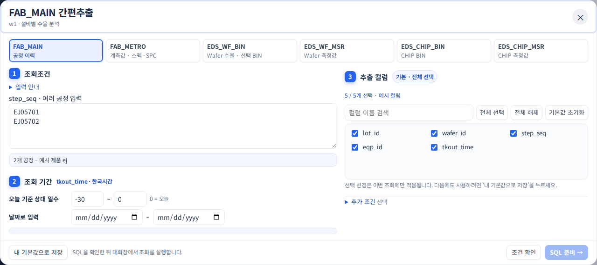

FLASH YE
DataTalk
자연어로 시작하는
통합 데이터 분석 툴
데이터 조회부터 시각화·분석까지,
하나의 흐름으로.
이유정2026.10
데이터 기반 · 문제 발견에서 실제 투자까지
DATA LAKE의 한계에서,
Flash YE 전용 Flake DB 도입으로.
공용 조회의 집중·지연
전사 공용 환경에서
반복되는 조회 대기
생산량 증가와 함께
커지는 제조 데이터·조회 부담
Flake DB 도입 제안
실제 투자로 연결팀에서 반복적으로 쓰는
데이터를 위한 전용 기반
Flash YE 전용
Flake DB
팀 주요 데이터를 위한
전용 DB 구축 중
DB 도입 제안에서, 현업의 쉬운 활용을 위한 DataTalk 추진으로.
DataTalk 추진배경 · 데이터 기반에서 현업 활용으로
DB가 있어도,
쉽게 활용하기는 어렵습니다.
현업이 원하는 것
“V9 제품 STEP 09,
설비별 수율을 보고 싶어요.”
- 01여러 테이블·컬럼 찾기
- 02JOIN 키·최신 이력 맞추기
- 03기간·조건·집계 적용하기
-- SYNTHETIC EXAMPLE · no internal tables or data
WITH fab_ranked AS (
SELECT f.lot_id, f.wafer_id, f.eqp_id,
f.chamber_id, f.product_id, f.step_id,
f.route_id, f.recipe_id, f.process_time,
ROW_NUMBER() OVER (
PARTITION BY f.lot_id, f.wafer_id, f.step_id
ORDER BY f.process_time DESC, f.event_id DESC
) AS fab_rn
FROM demo_fab_history AS f
INNER JOIN demo_product_catalog AS p
ON p.product_id = f.product_id
INNER JOIN demo_step_catalog AS s
ON s.step_id = f.step_id
WHERE p.product_code = 'V9'
AND s.process_group = 'MAIN'
AND s.step_seq = '09'
AND f.process_time >= CURRENT_DATE - INTERVAL '150 days'
AND f.record_status = 'VALID'
), yield_ranked AS (
SELECT y.lot_id, y.wafer_id, y.test_time,
y.good_die_count, y.total_die_count,
ROW_NUMBER() OVER (
PARTITION BY y.lot_id, y.wafer_id
ORDER BY y.test_time DESC, y.test_id DESC
) AS yield_rn
FROM demo_yield_measurement AS y
WHERE y.test_time >= CURRENT_DATE - INTERVAL '100 days'
AND y.total_die_count > 0
AND y.test_status = 'COMPLETE'
), fab_latest AS (
SELECT * FROM fab_ranked WHERE fab_rn = 1
), yield_latest AS (
SELECT * FROM yield_ranked WHERE yield_rn = 1
), joined_data AS (
SELECT f.lot_id, f.wafer_id,
eq.eqp_name, ch.chamber_name,
rt.route_name, rc.recipe_name,
f.process_time, y.test_time,
100.0 * y.good_die_count
/ NULLIF(y.total_die_count, 0) AS yield_pct,
lm.lot_type, wm.wafer_size
FROM fab_latest AS f
INNER JOIN yield_latest AS y
ON y.lot_id = f.lot_id
AND y.wafer_id = f.wafer_id
AND y.test_time >= f.process_time
INNER JOIN demo_equipment_catalog AS eq
ON eq.eqp_id = f.eqp_id
LEFT JOIN demo_chamber_catalog AS ch
ON ch.eqp_id = f.eqp_id
AND ch.chamber_id = f.chamber_id
LEFT JOIN demo_route_catalog AS rt
ON rt.route_id = f.route_id
LEFT JOIN demo_recipe_catalog AS rc
ON rc.recipe_id = f.recipe_id
INNER JOIN demo_lot_master AS lm
ON lm.lot_id = f.lot_id
INNER JOIN demo_wafer_master AS wm
ON wm.lot_id = f.lot_id
AND wm.wafer_id = f.wafer_id
WHERE lm.lot_type = 'PRODUCTION'
AND wm.wafer_status <> 'SCRAP'
)
SELECT eqp_name, chamber_name, recipe_name,
COUNT(*) AS wafer_count,
ROUND(AVG(yield_pct), 4) AS mean_yield,
ROUND(STDDEV_SAMP(yield_pct), 4) AS yield_std,
MIN(test_time) AS first_test,
MAX(test_time) AS last_test
FROM joined_data
GROUP BY eqp_name, chamber_name, recipe_name
HAVING COUNT(*) >= 3
ORDER BY mean_yield, eqp_name, chamber_name;사내 데이터·테이블을 사용하지 않은 설명용 SQL입니다. 조회·연결·조건 작성의 복잡함을 시각화한 예시입니다.
통합 분석 툴 · 자연어 기반 추출이 출발점
자연어 요청에서,
데이터 활용까지 이어갑니다.
업무 언어로 목적을 말하고,
빠진 조건만 대화로 보완합니다.이번 예시 · 설비별 수율 조회 + ANOVA 요청
- 01원하는 데이터를 말하기
제품 · 공정 · 설비별 수율을 업무 언어로 요청
- 02부족한 조건을 대화로 보완하기
예시 · FAB 150일 · 수율 100일로 기간 확인
- 03추출에서 활용으로 확장
조회·조인 → 시각화·분석 → 결과 활용
시각화·분석 · 개발 중인 추가 가치
실제 DataTalk UI · 시연용 가상 데이터
사내 정보를 제외하고 가상 데이터로 구성한 시연입니다.
핵심 가치 · 자연어 기반 추출
업무 언어로 한 번에 요청합니다.
시연용 가상 데이터
테이블·키·설비명·수율은 설명을 위해 만든 가상값입니다.
핵심 가치 · 자연어 기반 추출
빠진 조건만 다시 묻습니다.
시연용 가상 데이터
테이블·키·설비명·수율은 설명을 위해 만든 가상값입니다.
핵심 가치 · 자연어 기반 추출
데이터마다 필요한 기간을 답합니다.
시연용 가상 데이터
테이블·키·설비명·수율은 설명을 위해 만든 가상값입니다.
핵심 가치 · 자연어 기반 추출
조회하고 조인한 결과를 보여줍니다.
시연용 가상 데이터
테이블·키·설비명·수율은 설명을 위해 만든 가상값입니다.
추가 발굴 가치 · 개발 중
요청에서 분석 조건을 자동 연결합니다.
시연용 가상 데이터
가상 데이터로 구성한 자동 분석 흐름입니다. ANOVA API는 앱에 연결되어 있습니다.
추가 발굴 가치 · 개발 중
ANOVA 결과까지 자동으로 이어집니다.
시연용 가상 데이터
가상 데이터로 구성한 자동 분석 흐름입니다. ANOVA API는 앱에 연결되어 있습니다.
추가 발굴 가치 · 개발 중
평균과 분포를 함께 확인합니다.
시연용 가상 데이터
가상 데이터로 구성한 자동 분석 흐름입니다. ANOVA API는 앱에 연결되어 있습니다.
추가 발굴 가치 · 개발 중
필요한 분석 결과를 준비합니다.
시연용 가상 데이터
가상 데이터로 구성한 자동 분석 흐름입니다. ANOVA API는 앱에 연결되어 있습니다.
업무 방식에 맞춰 활용
익숙한 방식도,
새로운 활용도 함께.
추출해서 활용하기
자연어·간편추출로 데이터를 받고
Spotfire 등 기존 도구에서 분석
앱에서 확인하기
큰 원시 파일을 PC에 별도 저장하는 과정 없이
그래프·분석을 확인하고 필요한 결과 저장
시연에서 보신 흐름을 두 가지 방식으로 활용할 수 있습니다.
현업 활용 · 간편추출 추가
조건을 고르면, 바로 추출할 수 있습니다.

v6.0 화면을 바탕으로 가상 조회 조건과 예시 컬럼을 넣었습니다. 실제 데이터 조회 결과는 아닙니다.
분석 도구 · 연결 현황과 확장 방향
ANOVA API는 연결했습니다.
여러 분석 API를 MCP로 확장합니다.
앱에서 ANOVA 분석 실행
직접 만든 분석 API를 계속 추가할 수 있도록.
하나의 앱에서 여러 분석 도구를, 현업에 맞게 연결하고 활용합니다.
ANOVA API 연결 완료 · A·B·C는 추가할 분석 API의 예시이며 MCP 확장 구조는 개발 중
다음 단계 · 현업 언어 조사·반영
같은 YE팀이어도,
업무 언어는 다릅니다.
부서별로 다른 데이터와 표현
사용하는 데이터·용어가 다를 수 있습니다.
- 01
현업 표현 조사
부서별로 실제 사용하는 질문·용어 수집
- 02
데이터와 조건에 연결
표현에 맞는 데이터·조회 조건 반영
- 03
추가 학습·결과 확인
요청한 데이터가 정확하게 나오는지 검증
현업의 말이 데이터로 이어지도록, 업무 언어를 조사하고 반영하겠습니다.
현업 표현 반영과 추가 학습·검증이 필요한 단계입니다.
DATATALK · 현업의 쉬운 활용을 위해
필요한 데이터를
말로 꺼내고,
활용까지 연결합니다.
팀 전용 DB 투자를, 현업이 쓰는 가치로.
자연어 추출을 중심으로 시각화·분석까지 확장합니다.